| id | studyh | solved | mu |
|---|---|---|---|
| 1 | 2 | 16 | 10.408 |
| 2 | 16 | 16 | 13.771 |
| 3 | 39 | 15 | 21.815 |
| 4 | 73 | 36 | 43.06 |
| ... | ... | ... | ... |
| 97 | 25 | 19 | 16.487 |
| 98 | 37 | 13 | 20.959 |
| 99 | 15 | 13 | 13.499 |
| 100 | 1 | 14 | 10.202 |
Psychological Sciences
Filippo Gambarota
University of Padova
Last modified: 08-12-2025
Everything that we discussed for the binomial GLM is also relevant for the Poisson GLM. We are gonna focus on specificity of the Poisson model in particular:
The Poisson distribution is defined as:
\[ p(y; \lambda) = \frac{\lambda^y e^{-\lambda}}{y!} \]
Where the mean is \(\lambda\) and the variance is \(\lambda\)
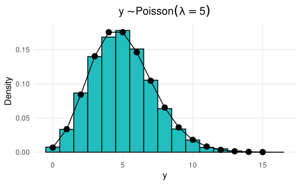
As the mean increases also the variance increase and the distributions is approximately normal:
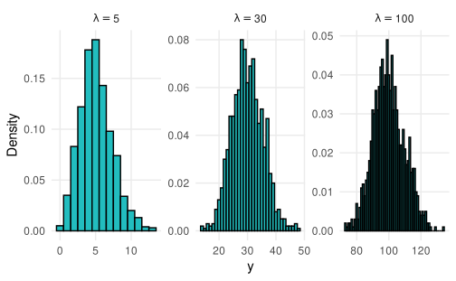
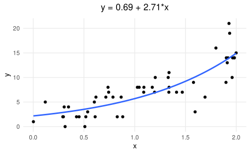
The common (and default in R) link function (\(g(\lambda)\)) for the Poisson distribution is the log link function and the inverse of link function is the exponential.
\[\begin{align*} log(\lambda_i) = \beta_0 + \beta_1x_{i1} + \beta_2x_{i2} + \cdots + \beta_px_{ip} \\ \lambda_i = e^{\beta_0 + \beta_1x_{i1} + \beta_2x_{i2} + \cdots + \beta_px_{ip}} \end{align*}\]
Let’s start by a simple example trying to explain the number of errors of math exercises by students (N = 100) as a function of the number of hours of study.
| id | studyh | solved | mu |
|---|---|---|---|
| 1 | 2 | 16 | 10.408 |
| 2 | 16 | 16 | 13.771 |
| 3 | 39 | 15 | 21.815 |
| 4 | 73 | 36 | 43.06 |
| ... | ... | ... | ... |
| 97 | 25 | 19 | 16.487 |
| 98 | 37 | 13 | 20.959 |
| 99 | 15 | 13 | 13.499 |
| 100 | 1 | 14 | 10.202 |
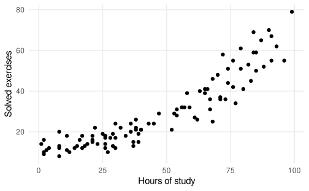
We can fit the model using the glm function in R setting the appropriate random component (family) and the link function (link):
#>
#> Call:
#> glm(formula = solved ~ studyh, family = poisson(link = "log"),
#> data = dat)
#>
#> Coefficients:
#> Estimate Std. Error z value Pr(>|z|)
#> (Intercept) 2.3057510 0.0471587 48.89 <2e-16 ***
#> studyh 0.0200018 0.0007092 28.20 <2e-16 ***
#> ---
#> Signif. codes: 0 '***' 0.001 '**' 0.01 '*' 0.05 '.' 0.1 ' ' 1
#>
#> (Dispersion parameter for poisson family taken to be 1)
#>
#> Null deviance: 949.652 on 99 degrees of freedom
#> Residual deviance: 93.777 on 98 degrees of freedom
#> AIC: 604.2
#>
#> Number of Fisher Scoring iterations: 4(Intercept) \(2.306\) is the log of the expected number of solved exercises for a student with 0 hours of studying. Taking the exponential we obtain the estimation on the response scale \(10.032\)
studyh \(0.020\) is the increase in the expected increase of (log) solved exercises for a unit increase in hours of studying. Taking the exponential we obtain the ratio of increase of the number of solved exercises \(1.020\)
Again, as in the binomial model, the effects are linear on the log scale but non-linear on the response scale.
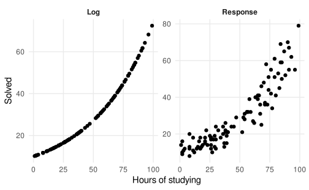
The non-linearity can be easily seen using the predict() function:
linear <- predict(fit, newdata = data.frame(studyh = c(10, 11)))
diff(linear) # same as the beta0#> 2
#> 0.02000177#> 2
#> 0.2475487# ratio of increase when using the response scale
nonlinear[2]/nonlinear[1]#> 2
#> 1.020203#> studyh
#> 1.020203Let’s make a similar example with the number of solved exercises comparing students who attended online classes and students attending in person. The class_c is the dummy version of class (0 = online, 1 = inperson).
| id | class | class_c | solved | mu |
|---|---|---|---|---|
| 1 | online | 0 | 13 | 10 |
| 2 | online | 0 | 9 | 10 |
| 3 | online | 0 | 10 | 10 |
| 4 | online | 0 | 7 | 10 |
| ... | ... | ... | ... | ... |
| 97 | inperson | 1 | 8 | 15 |
| 98 | inperson | 1 | 11 | 15 |
| 99 | inperson | 1 | 9 | 15 |
| 100 | inperson | 1 | 11 | 15 |
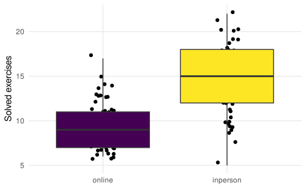
R by default set the categorical variables using dummy-coding. In this case we set the reference category to online.
#>
#> Call:
#> glm(formula = solved ~ class, family = poisson(link = "log"),
#> data = dat)
#>
#> Coefficients:
#> Estimate Std. Error z value Pr(>|z|)
#> (Intercept) 2.26592 0.04555 49.747 < 2e-16 ***
#> classinperson 0.42056 0.05863 7.174 7.3e-13 ***
#> ---
#> Signif. codes: 0 '***' 0.001 '**' 0.01 '*' 0.05 '.' 0.1 ' ' 1
#>
#> (Dispersion parameter for poisson family taken to be 1)
#>
#> Null deviance: 145.201 on 99 degrees of freedom
#> Residual deviance: 92.597 on 98 degrees of freedom
#> AIC: 525.51
#>
#> Number of Fisher Scoring iterations: 4class is 0. Thus the expected number of solved exercises for online students.classinperson is the difference in log solved exercises between online and in person classes. In the response scale is the expected increase in the ratio of solved exercises. People doing in person classes solve 152.28% of the exercises of people doing online classesOverdispersion concerns observing a greater variance compared to what would have been expected by the model.
The overdispersion \(\phi\) can be estimated using Pearson Residuals:
\[\begin{align*} \hat \phi = \frac{\sum_{i = 1}^n \frac{(y_i - \hat y_i)^2}{\hat y_i}}{n - p - 1} \end{align*}\]
Where the numerator is the sum of squared Pearson residuals, \(n\) is the number of observations and \(k\) the number of predictors. For standard Binomial and Poisson models \(\phi = 1\).
If the model is correctly specified for binomial and poisson models the ratio is equal to 1, of the ratio is \(> 1\) there is evidence for overdispersion. In practical terms, if the residual deviance is higher than the residuals degrees of freedom, there is evidence for overdispersion.
P <- sum(residuals(fit, type = "pearson")^2)
P / df.residual(fit) # nrow(fit$dat) - length(fit_p$coefficients)#> [1] 0.9208845To formally test for overdispersion i.e. testing if the ratio is significantly different from 1 we can use the performance::check_overdispersion() function.
performance::check_overdispersion(fit)#> # Overdispersion test
#>
#> dispersion ratio = 0.921
#> Pearson's Chi-Squared = 90.247
#> p-value = 0.699Pearson residuals are defined as:
\[ \begin{align*} r_p = \frac{y_i - \hat y_i}{\sqrt{V(\hat y_i)}} \\ V(\hat y_i) = \sqrt{\hat y_i} \end{align*} \]
Remember that the mean and the variance are the same in Poisson models. If the model is correct, the standardized residuals should be normally distributed with mean 0 and variance 1.
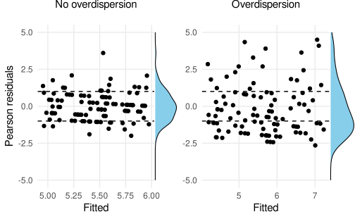
The overdispersion can be expressed also in terms of variance-mean ratio. In fact, when the ratio is 1, there is no evidence of overdispersion.
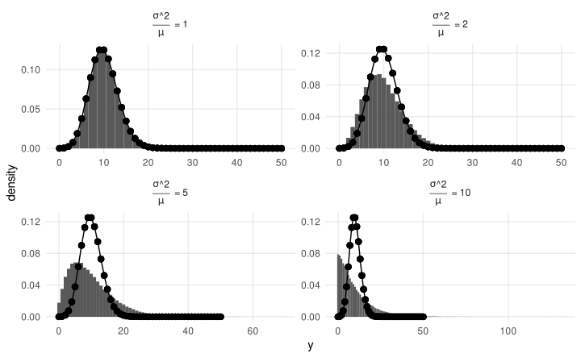
There could be multiple causes for overdispersion:
This (simulated) dataset contains \(n = 30\) observations coming from a poisson model in the form \(y = 1 + 2x\) and \(n = 7\) observations coming from a model \(y = 1 + 10x\).
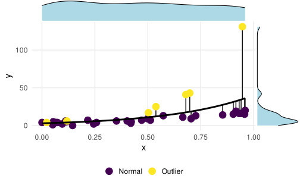
Clearly the sum of squared pearson residuals is inflated by these values producing more variance compared to what should be expected.
#> mean var
#> 13.91892 484.46547performance::check_overdispersion(fit)#> # Overdispersion test
#>
#> dispersion ratio = 12.523
#> Pearson's Chi-Squared = 438.300
#> p-value = < 0.001Let’s imagine to analyze again the dataset with the number of solved exercises. We have the effect of the studyh variable. In addition we have the effect of the class variable, without interaction.
| id | class | studyh | class_c | solved | lp | mu |
|---|---|---|---|---|---|---|
| 1 | online | 82 | 0 | 24 | 3.119 | 22.613 |
| 2 | online | 65 | 0 | 20 | 2.949 | 19.094 |
| 3 | online | 12 | 0 | 15 | 2.422 | 11.268 |
| 4 | online | 54 | 0 | 22 | 2.84 | 17.114 |
| ... | ... | ... | ... | ... | ... | ... |
| 17 | inperson | 85 | 1 | 55 | 4.065 | 58.245 |
| 18 | inperson | 55 | 1 | 41 | 3.766 | 43.213 |
| 19 | inperson | 80 | 1 | 55 | 4.015 | 55.418 |
| 20 | inperson | 77 | 1 | 60 | 3.985 | 53.788 |
We can also have a look at the data:
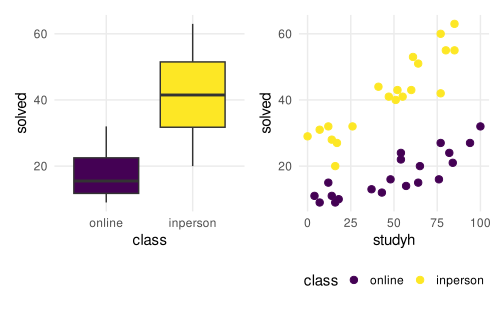
Now let’s fit the model considering only studyh and ignoring the group:
#>
#> Call:
#> glm(formula = solved ~ studyh, family = poisson(link = "log"),
#> data = dat)
#>
#> Coefficients:
#> Estimate Std. Error z value Pr(>|z|)
#> (Intercept) 2.934629 0.064919 45.204 <2e-16 ***
#> studyh 0.008647 0.001050 8.233 <2e-16 ***
#> ---
#> Signif. codes: 0 '***' 0.001 '**' 0.01 '*' 0.05 '.' 0.1 ' ' 1
#>
#> (Dispersion parameter for poisson family taken to be 1)
#>
#> Null deviance: 318.87 on 39 degrees of freedom
#> Residual deviance: 249.24 on 38 degrees of freedom
#> AIC: 456.43
#>
#> Number of Fisher Scoring iterations: 4Essentially, we are fitting an average relationship across groups but the model ignore that the two groups differs, thus the observed variance is definitely higher because we need two separate means to explain the class effect.
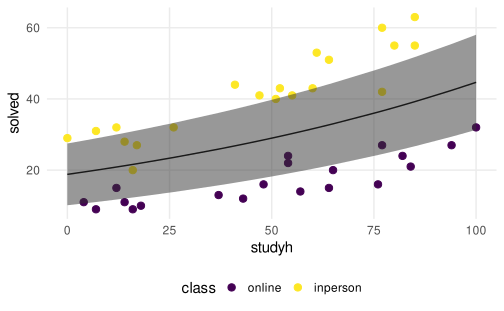
By fitting the appropriate model, the overdispersion is no longer a problem:
#>
#> Call:
#> glm(formula = solved ~ studyh + class, family = poisson(link = "log"),
#> data = dat)
#>
#> Coefficients:
#> Estimate Std. Error z value Pr(>|z|)
#> (Intercept) 2.300685 0.083557 27.534 <2e-16 ***
#> studyh 0.010160 0.001087 9.351 <2e-16 ***
#> classinperson 0.916343 0.064125 14.290 <2e-16 ***
#> ---
#> Signif. codes: 0 '***' 0.001 '**' 0.01 '*' 0.05 '.' 0.1 ' ' 1
#>
#> (Dispersion parameter for poisson family taken to be 1)
#>
#> Null deviance: 318.872 on 39 degrees of freedom
#> Residual deviance: 24.814 on 37 degrees of freedom
#> AIC: 234
#>
#> Number of Fisher Scoring iterations: 4performance::check_overdispersion(fit)#> # Overdispersion test
#>
#> dispersion ratio = 6.371
#> Pearson's Chi-Squared = 242.096
#> p-value = < 0.001performance::check_overdispersion(fit2)#> # Overdispersion test
#>
#> dispersion ratio = 0.663
#> Pearson's Chi-Squared = 24.540
#> p-value = 0.942Also the residuals plots clearly improved after including all relevant predictors:
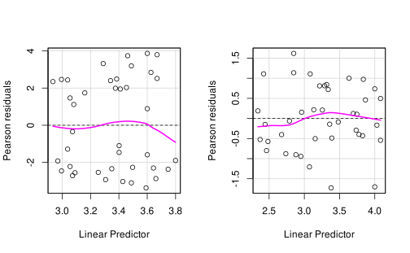
Before analyzing the two main strategies to deal with overdispersion, it is important to understand why it is very problematic.
The estimated overdispersion of fit is ~ 6.5590481. The summary() function in R has a dispersion argument to check how model parameters are affected.
phi <- fit$deviance / fit$df.residual
summary(fit, dispersion = 1)$coefficients # the default#> Estimate Std. Error z value Pr(>|z|)
#> (Intercept) 2.934629055 0.06491921 45.204326 0.000000e+00
#> studyh 0.008647398 0.00105036 8.232798 1.828902e-16summary(fit, dispersion = 2)$coefficients # assuming phi = 2#> Estimate Std. Error z value Pr(>|z|)
#> (Intercept) 2.934629055 0.091809625 31.964285 3.420915e-224
#> studyh 0.008647398 0.001485433 5.821467 5.833319e-09summary(fit, dispersion = phi)$coefficients # the appropriate#> Estimate Std. Error z value Pr(>|z|)
#> (Intercept) 2.934629055 0.166262240 17.650605 1.006727e-69
#> studyh 0.008647398 0.002690038 3.214601 1.306260e-03By using multiple values for \(\phi\) we can see the impact on the standard error. \(\phi = 1\) is what is assumed by the Poisson model.
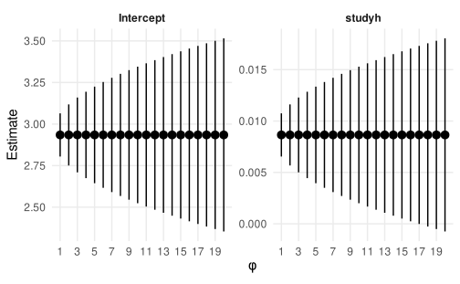
If all the variables are included and there are no outliers, the phenomenon itself contains more variability compared to what predicted by the Poisson. There are two main approaches to deal with the situation:
The quasi-poisson model is essentially a poisson model that estimate the \(\phi\) parameter and adjust the standard errors accordingly. Again, assuming to fit the studyh only model (with overdispersion):
fit <- glm(solved ~ studyh, data = dat, family = quasipoisson(link = "log"))
summary(fit)#>
#> Call:
#> glm(formula = solved ~ studyh, family = quasipoisson(link = "log"),
#> data = dat)
#>
#> Coefficients:
#> Estimate Std. Error t value Pr(>|t|)
#> (Intercept) 2.934629 0.163862 17.909 < 2e-16 ***
#> studyh 0.008647 0.002651 3.262 0.00234 **
#> ---
#> Signif. codes: 0 '***' 0.001 '**' 0.01 '*' 0.05 '.' 0.1 ' ' 1
#>
#> (Dispersion parameter for quasipoisson family taken to be 6.37105)
#>
#> Null deviance: 318.87 on 39 degrees of freedom
#> Residual deviance: 249.24 on 38 degrees of freedom
#> AIC: NA
#>
#> Number of Fisher Scoring iterations: 4The quasi-poisson model estimates the same parameters (\(\beta\)) and adjust standard errors. Notice that using summary(dispersion = ) is the same as fitting a quasi-Poisson model and using the estimated \(\phi\).
The quasi-poisson model is useful because it is a very simple way to deal with overdispersion.
The variance (\(V(\mu)\)) of the Poisson model is no longer \(\mu\) but \(V(\mu) = \mu\phi\). When \(\phi\) is close to 1, the quasi-Poisson model reduced to a standard Poisson model
Here we compare the expected variance (\(\pm 2\sqrt{V(y_i)}\))1 of the Quasi-Poisson and Poisson models:
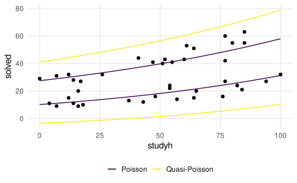
The main problem of quasi-* models is that they are not a specific distribution family and there is not a likelihood function. For this reason, we cannot perform model comparison the standard AIC/BIC. See (Ver Hoef & Boveng, 2007) for an overview.
A negative binomial model is different probability distribution with two parameters: the mean as in standard poisson model and the dispersion parameter. Similarly to the quasi-poisson model it estimates a dispersion parameter.
Practically the negative-binomial model can be considered as a hierarchical model:
\[\begin{align*} y_i \sim Poisson(\lambda_i) \\ \lambda_i \sim Gamma(\mu, \frac{1}{\theta}) \end{align*}\]
In this way, the Gamma distribution regulate the \(\lambda\) variability that otherwise is fixed to a single value in the Poisson model.
The Poisson-Gamma mixture can be expressed as:
\[ p(y; \mu, \theta) = \frac{\Gamma(y + \theta)}{\Gamma(\theta)\Gamma(y + 1)}\left(\frac{\mu}{\mu + \theta}\right)^{y} \left(\frac{\theta}{\mu + \theta}\right)^\theta \]
Where \(\theta\) is the overdispersion parameter, \(\Gamma()\) is the gamma function. The mean is \(\mu\) and the variance is \(\mu + \frac{\mu^2}{\theta}\). The \(\theta\) is the inverse of the overdispersion in terms that as \(1/\theta\) increase the data are more overdispersed. As \(1/\theta\) approaches 0, the negative-binomial reduced to a Poisson model.
Compared to the Poisson model, the negative binomial allows for overdispersion estimating the parameter \(\theta\) and compared to the quasi-poisson model the variance is not a linear increase of the mean (\(V(\mu) = \theta\mu\)) but have a quadratic relationship \(V(\mu) = \mu + \mu^2/\theta\)
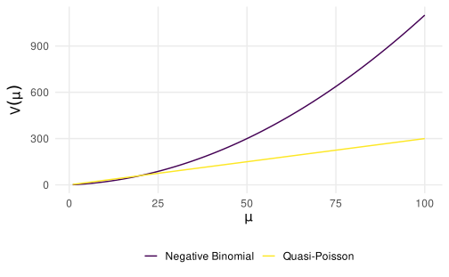
We can use the MASS package to implement the negative binomial distribution using the MASS::rnegbin():
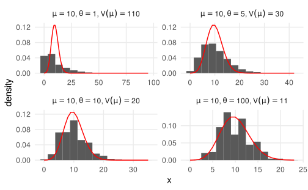
The \(\theta\) parameter is the estimated dispersion. To note, is not the same as \(\phi\) in the quasi-poisson model. As \(\theta\) increase, the overdispersion is reduced and the model is similar to a standard Poisson model.
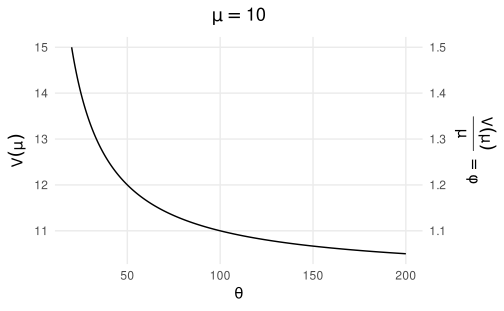
For fitting a negative-binomial model we cannot use the glm function but we need to use the MASS::glm.nb() function. The syntax is almost the same but we do not need to specify the family because this function only fit negative-binomial models. Let’s simulate some data coming from a negative binomial distribution with \(\theta = 10\)
| id | x | y |
|---|---|---|
| 1 | 0.22 | 8 |
| 2 | 0.427 | 21 |
| ... | ... | ... |
| 99 | 0.619 | 37 |
| 100 | 0.966 | 41 |
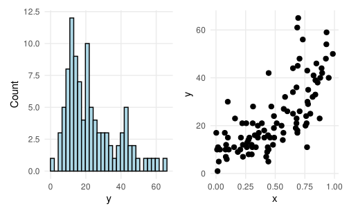
Then we can fit the model:
#>
#> Call:
#> MASS::glm.nb(formula = y ~ x, data = dat, init.theta = 8.541023041,
#> link = log)
#>
#> Coefficients:
#> Estimate Std. Error z value Pr(>|z|)
#> (Intercept) 2.23866 0.08891 25.18 <2e-16 ***
#> x 1.65690 0.15039 11.02 <2e-16 ***
#> ---
#> Signif. codes: 0 '***' 0.001 '**' 0.01 '*' 0.05 '.' 0.1 ' ' 1
#>
#> (Dispersion parameter for Negative Binomial(8.541) family taken to be 1)
#>
#> Null deviance: 230.82 on 99 degrees of freedom
#> Residual deviance: 104.20 on 98 degrees of freedom
#> AIC: 714.14
#>
#> Number of Fisher Scoring iterations: 1
#>
#>
#> Theta: 8.54
#> Std. Err.: 1.73
#>
#> 2 x log-likelihood: -708.135Here we compare the expected variance (\(\pm 2\sqrt{V(y_i)}\)) of the Negative binomial and Poisson models:
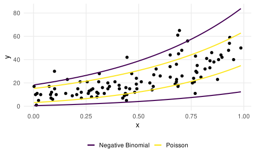
Here we compare the expected variance (\(\pm 2\sqrt{V(y_i)}\)) of the three models:
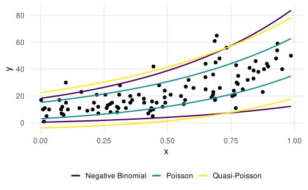
We can compare the coefficients fitting the Poisson, the Quasi-Poisson and the Negative-binomial model:
fit_p <- glm(y ~ x, data = dat, family = poisson(link = "log"))
fit_qp <- glm(y ~ x, data = dat, family = quasipoisson(link = "log"))
car::compareCoefs(fit_nb, fit_p, fit_qp)#> Calls:
#> 1: MASS::glm.nb(formula = y ~ x, data = dat, init.theta = 8.541023041, link
#> = log)
#> 2: glm(formula = y ~ x, family = poisson(link = "log"), data = dat)
#> 3: glm(formula = y ~ x, family = quasipoisson(link = "log"), data = dat)
#>
#> Model 1 Model 2 Model 3
#> (Intercept) 2.2387 2.2192 2.2192
#> SE 0.0889 0.0535 0.1054
#>
#> x 1.6569 1.6924 1.6924
#> SE 0.1504 0.0807 0.1591
#> In fact, if we think about number of errors (or whatever variable) for each participant, we are implicitly saying that each participant perform multiple “trials”.
head(dat)#> # A tibble: 6 × 7
#> id class studyh class_c solved lp mu
#> <int> <fct> <dbl> <dbl> <int> <dbl> <dbl>
#> 1 1 online 82 0 24 3.12 22.6
#> 2 2 online 65 0 20 2.95 19.1
#> 3 3 online 12 0 15 2.42 11.3
#> 4 4 online 54 0 22 2.84 17.1
#> 5 5 online 18 0 10 2.48 12.0
#> 6 6 online 64 0 15 2.94 18.9Each id performs multiple problems solving a certain number of them (solved). There is an hidden multilevel structure here.
#> Generalized linear mixed model fit by maximum likelihood (Laplace
#> Approximation) [glmerMod]
#> Family: poisson ( log )
#> Formula: solved ~ studyh + (1 | id)
#> Data: dat
#>
#> AIC BIC logLik -2*log(L) df.resid
#> 292.0 297.1 -143.0 286.0 37
#>
#> Scaled residuals:
#> Min 1Q Median 3Q Max
#> -1.3656 -0.4110 0.1139 0.2535 0.9839
#>
#> Random effects:
#> Groups Name Variance Std.Dev.
#> id (Intercept) 0.2146 0.4633
#> Number of obs: 40, groups: id, 20
#>
#> Fixed effects:
#> Estimate Std. Error z value Pr(>|z|)
#> (Intercept) 2.661339 0.145917 18.239 < 2e-16 ***
#> studyh 0.012216 0.001864 6.554 5.61e-11 ***
#> ---
#> Signif. codes: 0 '***' 0.001 '**' 0.01 '*' 0.05 '.' 0.1 ' ' 1
#>
#> Correlation of Fixed Effects:
#> (Intr)
#> studyh -0.668
#> optimizer (Nelder_Mead) convergence code: 0 (OK)
#> Model is nearly unidentifiable: very large eigenvalue
#> - Rescale variables?Let’s see the overdispersion compared to the non-multilevel poisson and the negative-binomial model:
fit_p <- glm(solved ~ studyh, data = dat, family = poisson(link = "log"))
fit_nb <- MASS::glm.nb(solved ~ studyh, data = dat)
performance::check_overdispersion(fit_p)
#> # Overdispersion test
#>
#> dispersion ratio = 6.371
#> Pearson's Chi-Squared = 242.096
#> p-value = < 0.001
performance::check_overdispersion(fit_nb)
#> # Overdispersion test
#>
#> dispersion ratio = 0.983
#> p-value = 0.96
performance::check_overdispersion(fit_m)
#> # Overdispersion test
#>
#> dispersion ratio = 0.374
#> Pearson's Chi-Squared = 13.838
#> p-value = 1#extra1
If you want to try to simulate NB data you can use the MASS::rnegbin(n, mu, theta) function or the rnb(n, mu, vmr) custom function that could be more intuitive because requires \(\mu\) (i.e., the mean) and vmr that is the desired variance-mean ratio. Using message = TRUE it will tells the \(\theta\) value:
#extra
You can also use the theta parameter within the rnb function. As \(\theta\) increase the overdispersion is reduced. Thus you can think the inverse of \(1/\theta\) as an index of overdispersion.
y <- rnb(1e5, mu = 10, theta = 10, message = TRUE)
y <- rnb(1e5, mu = 10, theta = 5, message = TRUE)
y <- rnb(1e5, mu = 10, theta = 1, message = TRUE)The Deviance based pseudo-\(R^2\) is computed from the ratio between the residual deviance and the null deviance1:
\[ R^2 = 1 - \frac{D_{current}}{D_{null}} \]
1 - fit_p$deviance/fit_p$null.deviance#> [1] 0.2183568The McFadden’s pseudo-\(R^2\) compute the ratio between the log-likelihood of the intercept-only (i.e., null) model and the current model (McFadden, 1987):
\[ R^2 = 1 - \frac{\log(\mathcal{L_{current}})}{\log(\mathcal{L_{null}})} \]
There is also the adjusted version that take into account the number of parameters of the model. In R can be computed manually or using the performance::r2_mcfadden():
performance::r2_mcfadden(fit_p)#> # R2 for Generalized Linear Regression
#> R2: 0.133
#> adj. R2: 0.130The Cox and Snell’s (Cox & Snell, 1989) \(R^2\) is defined as:
\[ R^2 = 1 - \left(\frac{\mathcal{L_{null}}}{\mathcal{L_{current}}}\right)^{\frac{2}{n}} \]
Where Nagelkerke (Nagelkerke, 1991) provide a correction to set the range of values between 0 and 1.
performance::r2_nagelkerke(fit_p)#> Nagelkerke's R2
#> 0.8248861Let’s simulate a GLM where there is a main effect but no interaction:
dat <- sim_design(100, between = list(g = c("a", "b")), covariates = list(x = new_cov(rnorm)))
dat <- sim_data(dat, ~ x * g, beta = c(log(10), log(1.5), log(2), 0), family = poisson(), which.mu = "lambda")
dat |>
ggplot(aes(x = x, y = y, color = g)) +
geom_point() +
stat_smooth(method = "glm",
method.args = list(family = poisson()))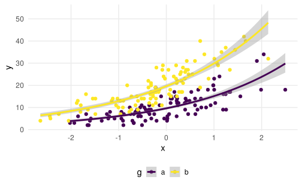
Let’s fit a linear model and the Poisson GLM with the interaction term:
#>
#> Call:
#> lm(formula = y ~ x * g, data = dat)
#>
#> Residuals:
#> Min 1Q Median 3Q Max
#> -9.2287 -3.2912 -0.0047 2.7386 13.6256
#>
#> Coefficients:
#> Estimate Std. Error t value Pr(>|t|)
#> (Intercept) 10.5406 0.4355 24.20 < 2e-16 ***
#> x 4.8217 0.4627 10.42 < 2e-16 ***
#> gb 10.4027 0.6263 16.61 < 2e-16 ***
#> x:gb 2.8134 0.6528 4.31 2.58e-05 ***
#> ---
#> Signif. codes: 0 '***' 0.001 '**' 0.01 '*' 0.05 '.' 0.1 ' ' 1
#>
#> Residual standard error: 4.352 on 196 degrees of freedom
#> Multiple R-squared: 0.7482, Adjusted R-squared: 0.7443
#> F-statistic: 194.1 on 3 and 196 DF, p-value: < 2.2e-16#>
#> Call:
#> glm(formula = y ~ x * g, family = poisson(link = "log"), data = dat)
#>
#> Coefficients:
#> Estimate Std. Error z value Pr(>|z|)
#> (Intercept) 2.26212 0.03335 67.835 <2e-16 ***
#> x 0.45404 0.03237 14.026 <2e-16 ***
#> gb 0.71285 0.04056 17.576 <2e-16 ***
#> x:gb -0.03243 0.04117 -0.788 0.431
#> ---
#> Signif. codes: 0 '***' 0.001 '**' 0.01 '*' 0.05 '.' 0.1 ' ' 1
#>
#> (Dispersion parameter for poisson family taken to be 1)
#>
#> Null deviance: 973.20 on 199 degrees of freedom
#> Residual deviance: 235.29 on 196 degrees of freedom
#> AIC: 1114.3
#>
#> Number of Fisher Scoring iterations: 4The linear model is estimating a completely misleading interaction due to the mean-variance relationship of the Poisson distribution.
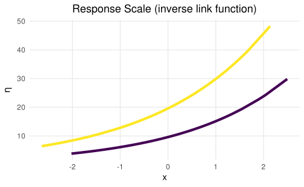
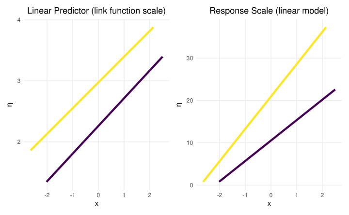
In this presentation we showed how serious could be the situation when fitting the wrong distribution and link function and estimating an interaction term.
https://filippogambarota.github.io/files/slides/2024-aip-sviluppo.pdf